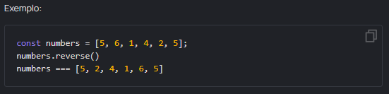
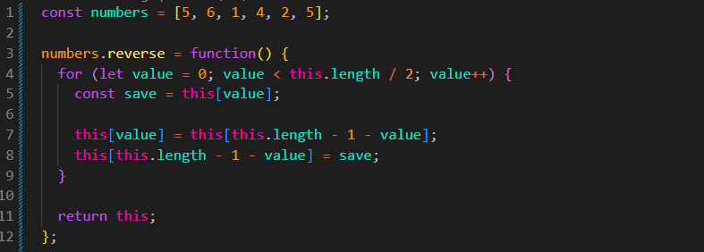

Implemente o método reverse, que repete a
funcionalidade do método original. Use this dentro do
método para acessar o array.
O uso de métodos de array está proibido nesta tarefa. Use loops,
acesso por índice e o comprimento do array, se necessário.
Lembre-se de que o método deve retornar o array invertido.

Resultado
JS:

Explicacao Resultado por Etapas
for (let value = 0; value < this.length / 2; value++)
let value = 0;: criamos uma variável para o
for, que terá como valor inicial o índice
0.
value < this.length / 2: enquanto o valor de
value for menor que a metade do comprimento do array,
o loop continuará. Fazemos apenas metade das voltas,
pois a cada volta trocamos dois elementos.
const save = this[value];: criamos uma variável que
receberá temporariamente o valor de this[value]. Esse
valor será usado depois para completar a troca.
this[value] = this[this.length - 1 - value];:
this[value] acessa o elemento atual do array. Depois,
ele recebe o elemento da posição oposta, calculada por
this.length - 1 - value.
this[this.length - 1 - value] = save;: acessamos
novamente a posição oposta e colocamos nela o valor que havíamos
guardado temporariamente em save. Assim, os dois
elementos são trocados.
Ponto Principal: precisa acessar a posição oposta duas vezes porque ela participa dos dois lados da troca: